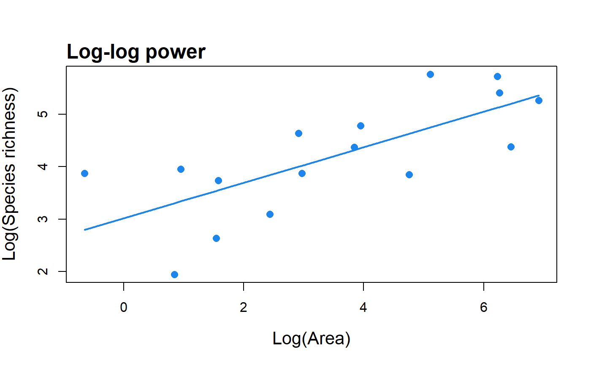

Fit the log-log version of the power model to SAR data and return parameter values, summary statistics and the fitted values.
lin_pow(data, con = 1, compare = FALSE, normaTest = "lillie", homoTest = "cor.fitted")
| data | A dataset in the form of a dataframe with two columns: the first with island/site areas, and the second with the species richness of each island/site. |
|---|---|
| con | The constant to add to the species richness values in cases where one of the islands has zero species. |
| compare | Fit the standard (non-linear) power model and return the
z-value for comparison (default: |
| normaTest | The test used to test the normality of the residuals of the model. Can be any of "lillie" (Lilliefors Kolmogorov-Smirnov test; the default), "shapiro" (Shapiro-Wilk test of normality), "kolmo" (Kolmogorov-Smirnov test), or "none" (no residuals normality test is undertaken). |
| homoTest | The test used to check for homogeneity of the residuals of the model. Can be any of "cor.fitted" (a correlation of the residuals with the model fitted values; the default), "cor.area" (a correlation of the residuals with the area values), or "none" (no residuals homogeneity test is undertaken). |
A list of class "sars" with up to six elements. The first element is an object of class 'summary.lm'. This is the summary of the linear model fit using the lm function and the user's data. The second element is a numeric vector of the model's fitted values, and the third contains the log-transformed observed data. The remaining elements depend on the function arguments selected and can include the results of the non-linear power model fit, and of the residuals normality and heterogeneity tests.
The summary.sars function returns a more useful summary of
the model fit results, and the plot.sars plots the model.
A check is made for any islands with zero species. If any zero
species islands are found, a constant (default: con = 1) is added to each
species richness value to enable log transformation. Natural logarithms are
used.
The compare argument can be used to compare the c and z values
calculated using the log-log power model with that calculated using the
non-linear power model. Note that the log-log function returns logc.
data(galap) fit <- lin_pow(galap, con = 1) summary(fit)#> Model = Log-log power #> #> Call: #> lm(formula = S ~ A, data = log.data) #> #> Residuals: #> Min 1Q Median 3Q Max #> -1.3591 -0.7584 0.1177 0.6009 1.0739 #> #> Coefficients: #> Estimate Std. Error t value Pr(>|t|) #> LogC 3.01865 0.35442 8.517 6.56e-07 *** #> z 0.33854 0.08523 3.972 0.00139 ** #> --- #> Signif. codes: 0 ‘***’ 0.001 ‘**’ 0.01 ‘*’ 0.05 ‘.’ 0.1 ‘ ’ 1 #> #> Residual standard error: 0.7626 on 14 degrees of freedom #> Multiple R-squared: 0.5298, Adjusted R-squared: 0.4962 #> F-statistic: 15.78 on 1 and 14 DF, p-value: 0.001391 #>plot(fit)